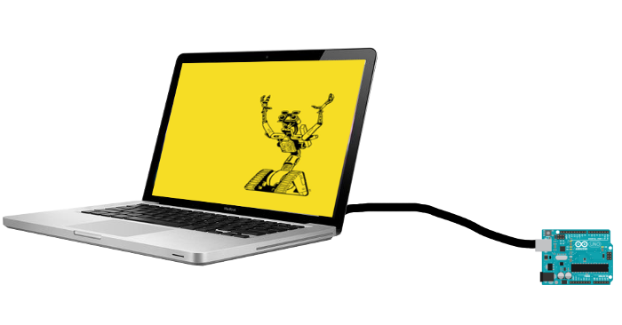
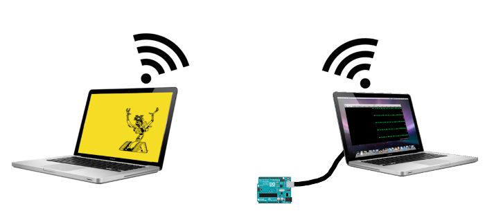
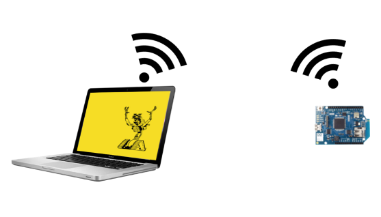
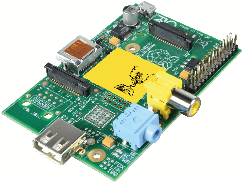
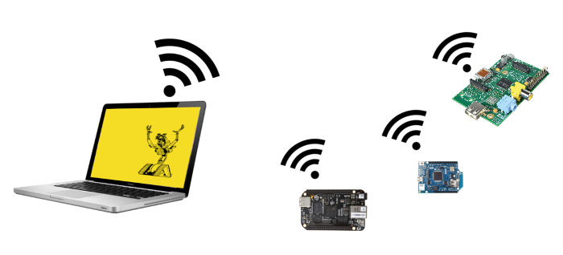

remotebots cutting the cord with remote io
december 5th 2014
Node-serialport
The creation of node-serialport was the first step towards what we now call nodebots.
Among many other uses, this node-serialport allowed us to use JavaScript to communicate with hobbyist robotic hardware such as the Arduino platform.
Adruino is an easy to use open source hardware platform that enables us to read sensors, control motors, and basically anything else we need to build our robots on top of. The microcontroller chip on the Arduino itself runs what's called a sketch. It is native C code compiled an loaded onto the device.

A very popular Arduino sketch is StandardFirmata which implements the firmata protocol on the hardware. This allows us to control all of the input and output pins on the Arduino.
Since we can talk to a serial port with JavaScript, it stands to reason we could remote control an Arduino using Firmata. And thankfully, we have a firmata.js JavaScript API to do just that. It provides the necessary calls to do things such as set pins to the correct input/output modes and signal them as to when they should toggle the delivery of electrical current.
While we could do amazing things on top of firamta.js, using just this low-level API to build complex robots could become a bit tedious.
Johnny-Five
The excellent johnny-five library took firmata.js and built all kinds of helpful higher level APIs on top of it. We can do things such as control LCD screens, motors, buttons, claws, sensors, and all sorts of other utilities.
We simply need to plug an Arduino into a computer with a USB cable and get to writing JavaScript. In fact, you don't even need node.js with IcedDev's chromebots app. And thanks to Jacob Rosenthal's new JavaScript-based Arudino binary loader, your "time to awesome" is about 30 seconds :)

Virtual Serial Ports
You may at some point in your JavaScript robot creation adventures decide that you'd like to remote control your Arduino from another computer or server or cloud service. So our first step towards that goal should be to use serial port implementation that uses a network connection.

I've built a few virtual serial port implementations to help with that goal: skynet-serial, mqtt-serial, socket.io-serial, and a few others.
All we need to do now is bind a physical serialport connection to the cloud service of your choice. For example here's how we could bind an Arduino plugged into a mac to Octoblu(skynet):
var SerialPort = require('serialport').SerialPort;
var bindPhysical = require('skynet-serial').bindPhysical;
var skynet = require('skynet');
// setup variables for myId, token, sendId
// the sendId should be for the uuid of the SkynetSerialPort app.
var conn = skynet.createConnection({
uuid: myId,
token: token
});
conn.on('ready', function(data){
var serialPort = new SerialPort('/dev/tty.usbmodem1411',{
baudrate: 57600,
buffersize: 1
});
bindPhysical(serialPort, conn);
});Then you can remote control that device from another computer:
var SkynetSerialPort = require('skynet-serial').SerialPort;
var skynet = require('skynet');
// setup variables for myId, token, sendId
// the sendId is for the uuid of the physical serial device
var conn = skynet.createConnection({
uuid: myId,
token: token
});
conn.on('ready', function(data){
var serialPort = new SkynetSerialPort(conn, sendId);
var board = new firmata.Board(serialPort, function (err, ok) {
if (err){ throw err; }
//light up a pin
board.digitalWrite(13, 1);
});
});But I have an Arduino Wifi shield!
Even better!
If you have a Wifi or Ethernet shield, Jacob Rosenthal made an Arduino sketch called Microblu that connects up to Octoblu and waits for firmata commands.
So you can skip the bindPhysical step in the above example and take your firmata/johnny-five code and go directly through Octoblu into your network connected Arduino.

Can I use a Raspberry Pi, BeagleBone, LightBlue Bean, Imp, Galileo, etc instead of an Arduino?
Absolutely.
Something really cool happened earlier this year: Rick Waldron made a great blog post about decoupling johnny-five from Arduino by way of IO plugins. I've even had the pleasure of creating one for the bluetooth low-energy based LightBlue Bean called bean-io
Some of the more powerful devices can even run johnny-five directly on the hardware. So you can connect to the local GPIO (general purpose input/output) Pins on the board with a device-specific IO plugin and wrap that with johnny-five APIs. Then connect that script to the internet and handle incoming messages to remote control your robot.

Now we just need to come up with a common message format so we can have lots of messages to lots of robots around the world.
Waitaminute...
We already have that message format, it's called firmata :)
Enter Remote-IO
Since we can treat serial ports, virtual or physical, are just a means of getting bytes back and forth to a device, we can use that as a base of a new johnny-five IO plugin to let us connect any robot to any program.
I've put together an IO class I'm calling remote-io. With this we can simply wrap any other IO instance and connect it to any virtual serial port:
var RemoteIO = require('remote-io');
//io could be instance of bean-io, rpi-io, etc.
io.on('ready', function(){
//listen for remote firmata messages
var remoteio = new RemoteIO({
serial: sp, //any virtual serial port instance
io: io
});
});Now you can simply write johnny-five code that runs anywhere and uses any virtual serial port. Your johnny-five code just uses the typical firmata IO class to talk to the remote-io instace.
var five = require('johnny-five');
var firmata = require('firmata');
//sp could be any instance of a virtual serial port
var io = new firmata.Board(sp);
var board = new five.Board({io: io});
board.on('ready', function(){
var led = new five.Led(13);
led.blink();
});
Remote-io currently supports PWM, Servo, Digital pin writing, Analog sensor input and a few other commands. If anyone's interested, I could use some help with I2C and SPI.
What's Next?
Virtual serial ports could be websockets, HTTP posts, carrier pigeons, whatever. And many of these transports could even run in web page. In fact, these pages could even be delivered from devices that are powerful enough to run node and host the pages.
If we're truly building an Internet of Things, we need to be able to remote control ALL of the things. We need every company that's building cool new hardware to make sure that there's a johnny-five IO class for it.
-Luis